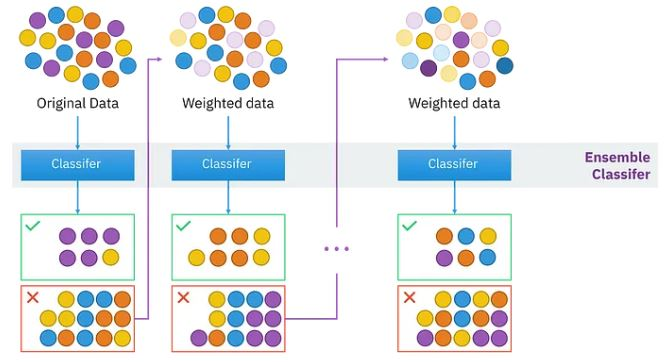
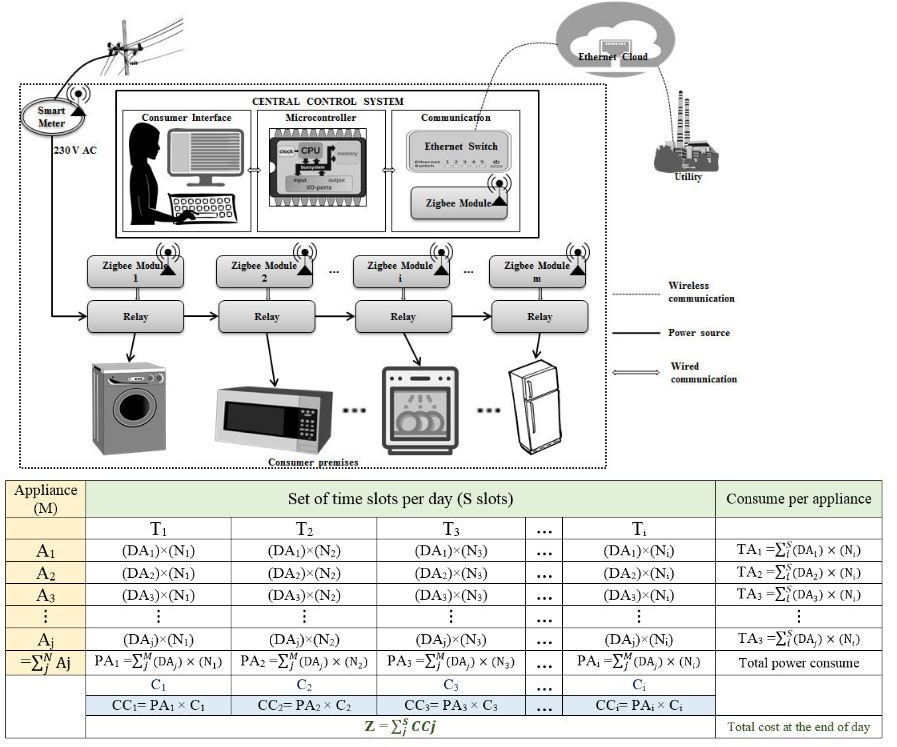
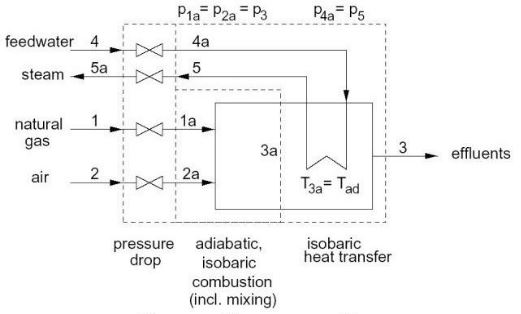
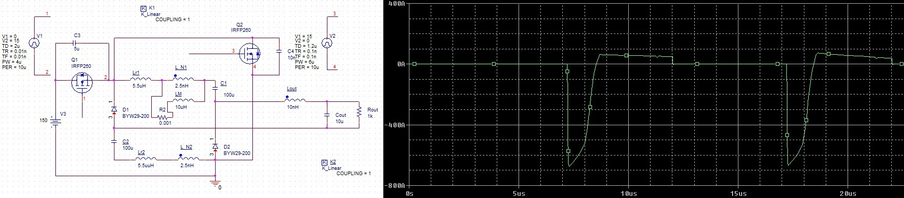
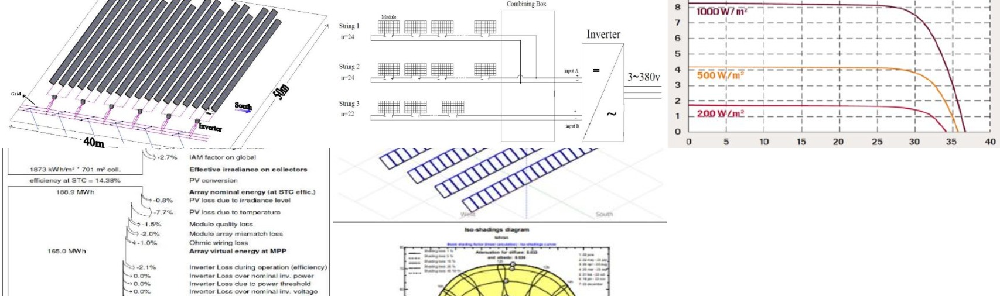

Developing Regression Methods for Estimating the Elastic Modulus of Rock Using Machine Learning (2024)

This project aims to develop and evaluate advanced regression models to estimate the elastic modulus of rock, an essential parameter in geotechnical engineering, mining, and construction. The models are built using machine learning algorithms including Deep Neural Networks (DNN), XGBoost, and AdaBoost. All implementations are done using Python, utilizing libraries such as Scikit-learn, XGBoost, TensorFlow/Keras, Pandas, and Matplotlib.
The input data includes physical and mechanical properties of rock samples—such as density, porosity, uniaxial compressive strength, and mineral composition. After preprocessing the dataset, the models are trained and evaluated using metrics like Mean Squared Error (MSE), Mean Absolute Error (MAE), and R-squared (R²). Techniques such as hyperparameter tuning and cross-validation are used to improve model performance and prevent overfitting.
The final outcome includes accurate machine learning models for predicting elastic modulus, analysis of feature importance, and a clean, modular Python codebase suitable for future research or real-world engineering applications.
🔗 View on GitHub
Simulation and Optimization of National-Scale Energy Systems in EnergyPLAN: A Multi-Scenario Study on Efficiency, Emissions, and Flexibility (2024)

As part of my training in advanced energy systems modeling, I completed EnergyPLAN Exercise 2, which involved step-by-step analysis and optimization of a national-scale energy system. The exercise built upon a predefined baseline scenario and included a series of improvements aimed at reducing energy consumption and CO₂ emissions while enhancing system efficiency and flexibility. First, I implemented energy conservation measures in the residential heating sector by reducing space heating demand by 50% for both district heating and individual house heating. This required recalculating demand profiles and applying new hourly distribution files. The effects of these measures were analyzed in terms of changes in peak heat demand, total primary energy consumption, and resulting CO₂ emissions. Next, I replaced conventional district heating boilers with a mix of small-scale and large-scale Combined Heat and Power (CHP) plants, fueled by natural gas and coal respectively. Industrial waste heat recovery was integrated into the system, along with the addition of backup boiler capacity and thermal storage. This configuration allowed for improved fuel efficiency and reduced reliance on standalone heating technologies. Following that, I simulated the integration of 3000 MW offshore wind power using real hourly wind data. This scenario introduced potential excess electricity production, especially during low-demand periods. I explored two regulation strategies for CHP plants—operating based solely on heat demand and operating based on both heat and electricity demands—to understand the implications for system balancing, primary energy supply, and emissions. Subsequently, I modeled a 30% reduction in national electricity demand, bringing it down from 49 TWh/year to 34.3 TWh/year. Again, both CHP regulation strategies were assessed to measure their impact on energy efficiency, excess electricity production, and emission levels under reduced consumption conditions. Finally, I added a 300 MW heat pump with a coefficient of performance (COP) of 3 and increased thermal storage by 40 GWh. This allowed for greater operational flexibility of CHP units and more efficient use of renewable electricity, especially during periods of high wind generation. Through this exercise, I gained valuable hands-on experience in energy system optimization, scenario-based planning, and sustainable infrastructure design using the EnergyPLAN model. The analyses demonstrated how integrated policy and technology interventions can significantly improve the sustainability and resilience of national energy systems.
🔗 View on GitHub
Application of the simplex method to reduce the peak demand and cost of household consumers (2022)

In a separate research project, I applied the Simplex optimization method to minimize peak electricity demand and reduce overall energy costs for residential consumers. This study focused on shifting household load profiles using linear programming while ensuring user comfort and operational constraints. The optimization was implemented in MATLAB, which provided robust tools for modeling, simulation, and data analysis. The results demonstrated how intelligent scheduling of appliances can significantly improve energy efficiency and reduce costs, supporting demand-side management initiatives.
🔗 View on GitHub
Examining two proposals to reduce electricity consumption in an office building during peak hours (2022)

Another project addressed load management strategies in office buildings in Tehran, where frequent summer power outages are common. The first strategy employed load shifting through MATLAB-based energy management, successfully reducing peak demand while preserving occupant comfort. The second explored the feasibility of installing a rooftop solar power system; however, due to high energy consumption and low electricity tariffs, this option was found to be economically unjustifiable.
🔗 View on GitHub
Entropy analysis and exergy calculation of all flows in a power plant cycle (2021)

As part of my coursework in "Optimization of Exergy Flow," I conducted a comprehensive entropy and exergy analysis of a power plant thermodynamic cycle. This project involved modeling each component—turbines, compressors, heat exchangers, pumps—using both MATLAB and Python. I utilized custom scripts and libraries, such as CoolProp in Python, to compute entropy generation, exergy destruction, and second-law efficiencies. This comparative approach provided valuable insights into software capabilities for thermodynamic analysis and highlighted areas for potential efficiency improvements within the cycle.
🔗 View on GitHub
Simulation of soft switched non-isolated high step-down converter with PSpice software (2021)

Testing electronic circuits in practice is time-consuming, expensive and tedious. Hence, computer simulation software was designed to simulate circuits. In fact, simulation fills the gap between theoretical analysis of the circuit and its practical construction. One of the most famous software in this field is PSpice software, which is very suitable for simulating circuits at intermediate frequencies. Using its features, this software performs simulations in a way that has a slight difference from reality and in case of practical implementation, you will get the same answer as the simulation. A non-isolated high step-down DC-DC converter with ultra-high step down conversion ratio is simulated. Advantages of proposed converter can be summarized as: high step down ratio, extended duty cycle, reduced switching losses by converter operation under ZVS conditions, reduced reverse recovery losses of diodes by achieved ZCS turn off condition, and reduced voltage spikes by inherent active clamping structure of the converter.
🔗 View on GitHub
Comprehensive Electrical and Mechanical Design of a 230 kV Transmission Line with MATLAB Simulation (2021)

As part of a comprehensive power systems engineering project, I participated in the electrical and mechanical design of a 230 kV high-voltage transmission line, supported by simulation and analysis in MATLAB. The goal of the project was to design a reliable and efficient overhead transmission line by addressing both electrical performance and mechanical feasibility under realistic operating conditions. The electrical design began with the selection of a suitable conductor based on critical parameters such as current-carrying capacity, voltage drop, power losses, short-circuit withstand rating, and corona discharge characteristics. A compatible shield wire (ground wire) was then chosen to protect the line from lightning-induced overvoltages. We conducted a detailed insulation coordination analysis to account for various transient overvoltages arising from lightning strikes, switching operations, power frequency events, and pollution. Based on these evaluations, we determined the required number of insulator discs and air clearance distances necessary to ensure system safety and reliability under extreme conditions. The mechanical design included the development of loading tables and the calculation of tension and sag for the transmission conductors. We identified appropriate mechanical loading conditions (e.g., wind, ice, and temperature variations), selected suitable design spans, and performed tower placement planning to ensure structural integrity across different terrain types. By combining theoretical modeling with MATLAB-based simulations, the project provided a practical and in-depth understanding of the interdisciplinary challenges involved in modern high-voltage transmission line design.
🔗 View on GitHub
Optimum design of a 100 KW photovoltaic power plant connected to the grid in Tehran using PVsyst software. (2021)

In the proposed method, after selecting the module and inverter model, the optimal design of the photovoltaic power plant is carried out by considering parameters such as the reliability factor, cost, optimal land use, and increased energy output. This is done within the maximum operating range of the system using the PVsyst software. In this software, the arrangement of the photovoltaic modules in connection and the number of strings are determined. Subsequently, output characteristics, shading, and losses are extracted and analyzed using the PVsyst software.
🔗 View on GitHub